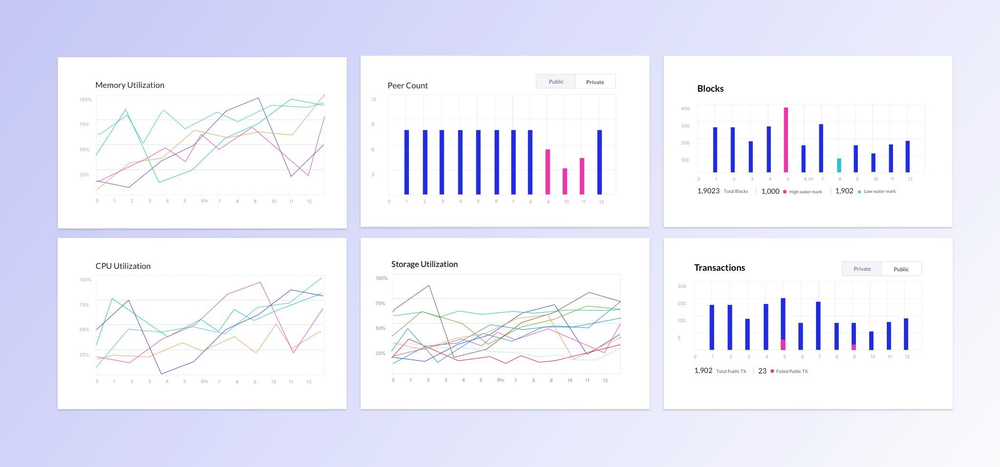
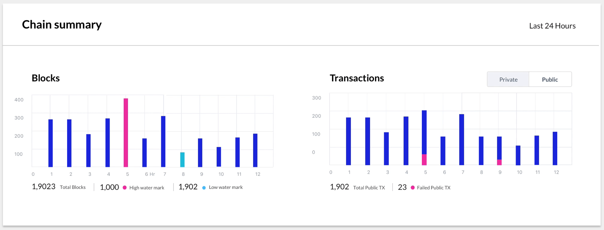
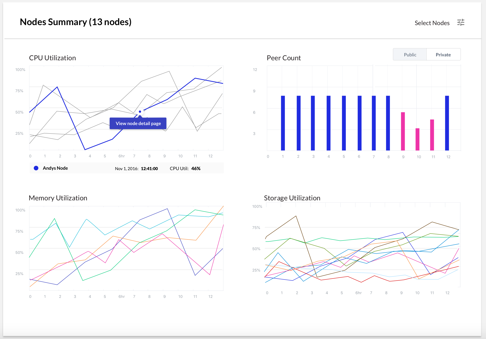
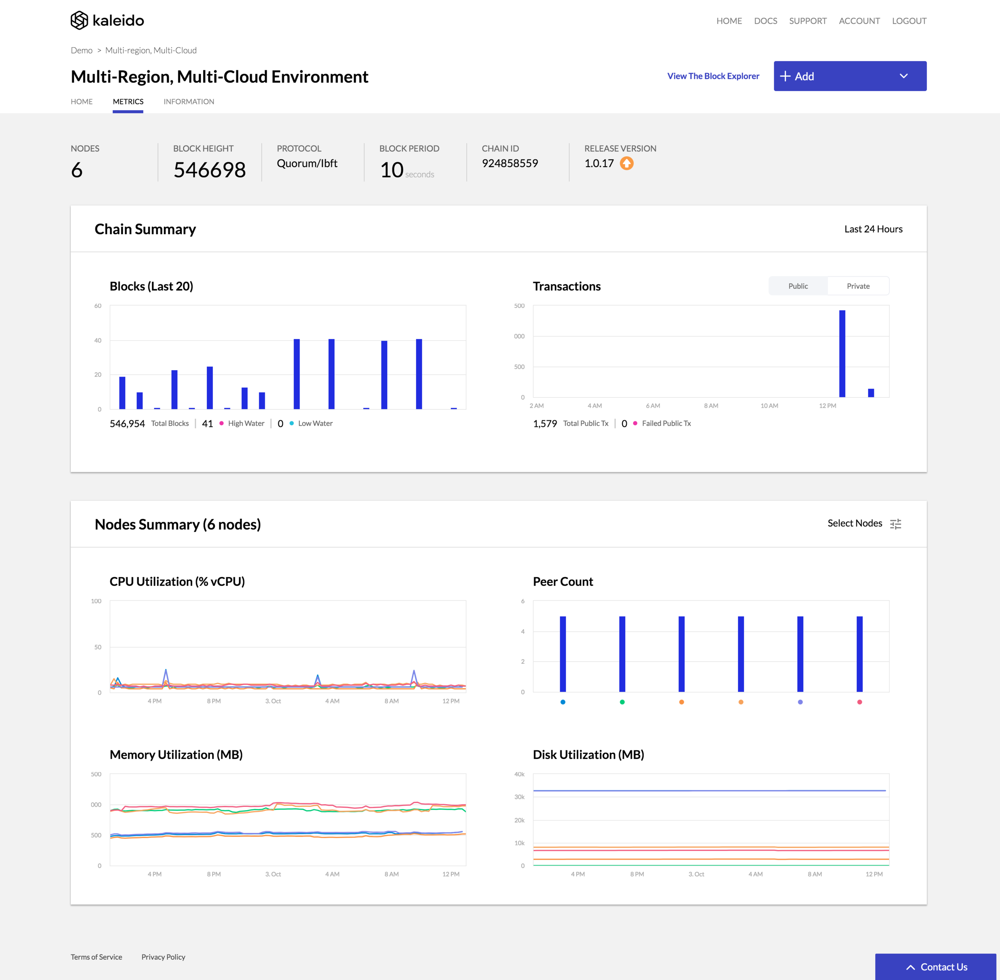

×

Kaleido's customers were running enterprise blockchains in production — without a clear picture of whether their environments were healthy. I led the design of a dashboard that turned protocol-engineer intuition into a tool any operator could use to spot trouble before it spread.

The problem
Kaleido is a Blockchain-as-a-Service platform. Customers spin up nodes, build consortiums, and run production environments without having to operate the underlying chain themselves. The trade is convenience for visibility — and that trade was starting to show.
Operators didn't have a clear way to answer the most basic question about their own environment: is this thing healthy right now? Block height, transaction throughput, node resource pressure — the data existed, but it lived in places only the protocol engineers knew how to read.
The framing question for the project came directly from the team:
"How do we identify what qualifies as a 'healthy' environment — and how do we bring those data points to the user so they can act on them?"
That's a deceptively hard question. "Healthy" isn't a single metric. It's a pattern across several signals, read against a baseline that varies by chain, traffic, and configuration. The dashboard couldn't just display data — it had to help operators recognize when something was off, even before they knew what to look for.
Research
Interviews with protocol and DevOps engineers surfaced five design principles — each a yardstick I checked the design against later.
Chain Health
An environment has two fundamentally different layers — the chain itself, and the nodes running it. Engineers diagnosed them differently, so the dashboard splits along that same line: Chain Health and Node Health, two distinct mental models, two distinct visual treatments.
Chain Health answers the network-level question: is this chain doing what it's supposed to do? The default time window is the last 24 hours — long enough to see overnight patterns, short enough to feel current.
Two panels carry most of the load:
Block height anchors the top of the section as a single, prominent number. It's the simplest signal of "the chain is moving" and the first thing engineers told me they look at when something feels off.

Node Health
Node Health is the troubleshooting surface. The default view shows all nodes in the environment together, so operators can spot which one is misbehaving without having to know its name first. Click into a node and the same metrics narrow to that single instance — same vocabulary, same chart shapes, just scoped down.
The four metrics earned their place because they're what engineers said they actually check, in roughly this order:
Progressive disclosure does the heavy lifting here. The all-nodes view is intentionally calm — sparklines, no axes, no labels you don't need. The single-node view brings in detail: full charts, axis values, time-range scrubbing. The same component, two density levels, switched by user intent.


Reflection
This was an early-career project at Kaleido and the one I learned the most from about designing for technical operators. A few things I'd carry forward:
When the audience is technical, the people already doing the job in their head are the most valuable design input you have. Externalizing the protocol engineers' mental model gave me an IA that didn't need to be defended later.
I'd design the alerting story alongside the dashboard, not after. A monitoring tool is half-finished without an opinion about when it should reach out to you — and that's a design problem, not just a configuration screen.